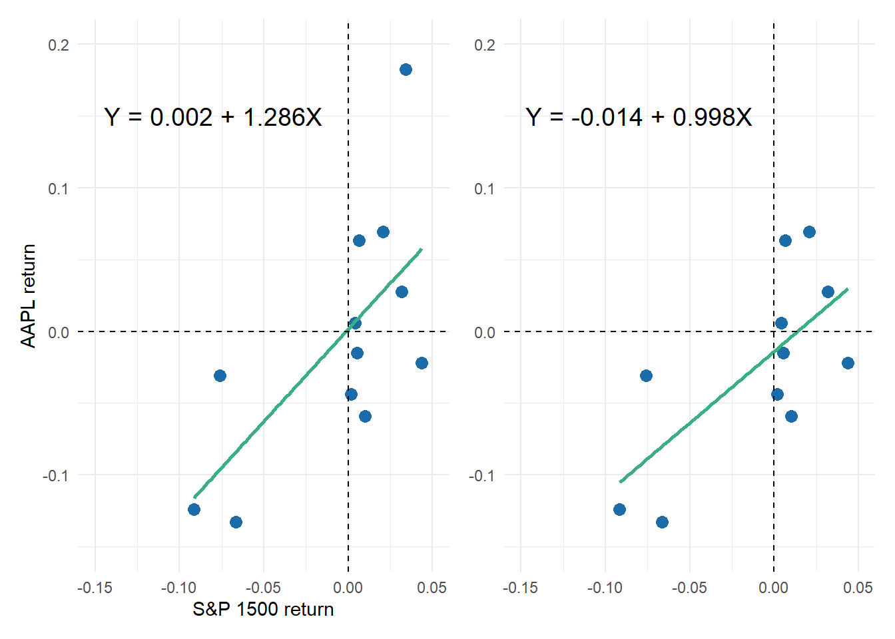

library(tidyverse); library(gt)
library(patchwork)
library(broom); library(performance); library(lmtest)
library(desk)Contents
- Illustration of residual sum of squares (RSS) with n = 12 subset
- Univariate (aka, simple) linear regression: AAPL vs S&P 1500, n = 72 months
- Model diagnostics
- Autocorrelation test
Loading packages
Regressing Apple’s (AAPL) returns against S&P 1500
Subset of 12 months just to illustrate RSS boxes
The full set is 72 months of returns. The sample of 12 months is just to illustrate the residual sum of squares (RSS) concept; the squares are less cluttered.
data_72 <- readRDS("t2-20-17-aapl-sp1500.rds") # 72 monthly returns
row.names(data_72) <- 1:nrow(data_72)
model_72 <- lm(r_m_AAPL ~ r_SP_1500, data = data_72) # linear model
set.seed(97531) # Adding Y ~ X just because they're familiar axes
data_12 <- sample_n(data_72, 12) # sample of 12 monthly returns
data_12$y <- data_12$r_m_AAPL # just to illustrate RSS
data_12$x <- data_12$r_SP_1500
model_12 <- lm(y ~ x, data=data_12) # linear model
data_12$residuals <- residuals(model_12)
sum(model_12$residuals^2)[1] 0.0448225RSS <- sum(model_12$residuals^2)
pred_Y <- predict(model_12)
cooks_d <- cooks.distance(model_12)
# colors for plots
green_line = "#3aaf85"; blue_points = "#1b6ca8"; red_color = "#cd201f"
p0 <- data_12 |> ggplot(aes(x=x, y=y)) +
geom_point(size=3, color=blue_points) +
geom_smooth(method="lm", se=FALSE, color=green_line)
p1 <- p0 +
theme_minimal() +
xlab("S&P 1500 return") +
ylab("AAPL return") +
coord_cartesian(xlim = c(-0.15, 0.05), ylim = c(-0.15, 0.20))
p2 <- p0 +
geom_segment(aes(xend=x, yend=y - residuals), color="purple4", linewidth = 1, linetype = "dashed") +
geom_rect(aes(xmin = x - abs(residuals),
xmax = x,
ymin = ifelse(residuals > 0, y - abs(residuals), y),
ymax = ifelse(residuals > 0, y, y + abs(residuals))),
fill="purple4", color="purple", linewidth=0.5, alpha = 0.10) +
theme_minimal() +
theme(axis.title = element_blank()) +
coord_cartesian(xlim = c(-0.15, 0.05), ylim = c(-0.15, 0.20))
scatter_pw <- p1 + p2
scatter_pw + plot_annotation(
title = "The OLS line minimizes the residual sum of squares (RSS)",
subtitle = sprintf("In ths case, RSS = %.4f", RSS)
)
# To show the residuals in a gt table
result_df <- data.frame(
X = data_12$x,
Y = data_12$y,
Pred_Y = pred_Y,
residual = model_12$residuals,
residual_sq = model_12$residuals^2,
cooksD = cooks_d
)
# But sorting by X = SP1500
result_df_sorted <- result_df[order(result_df$X), ]
result_df_sorted_tbl <- gt(result_df_sorted)
p1_tbl <- result_df_sorted_tbl |>
fmt_percent(
columns = 1:4,
decimals = 2
) |>
fmt_number(
columns = 5:6,
decimals = 5
) |>
cols_label(
X = md("**S&P 1500**"),
Y = md("**AAPL**"),
Pred_Y = md("**Pred(AAPL)**"),
residual = md("**Residual**"),
residual_sq = md("**Residual^2**"),
cooksD = md("**Cook's D**")
) |>
data_color(
columns = 5,
palette = c("white","purple4"),
domain = c(0,0.02),
na_color = "lightgrey"
) |>
data_color(
columns = 6,
palette = c("white","purple4"),
domain = c(0,0.50),
na_color = "lightgrey"
) |>
tab_options(
table.font.size = 12
)
p1_tbl| S&P 1500 | AAPL | Pred(AAPL) | Residual | Residual^2 | Cook’s D |
|---|---|---|---|---|---|
| −9.15% | −12.41% | −11.61% | −0.80% | 0.00006 | 0.00797 |
| −7.60% | −3.10% | −9.62% | 6.53% | 0.00426 | 0.28504 |
| −6.64% | −13.26% | −8.38% | −4.88% | 0.00238 | 0.11176 |
| 0.19% | −4.36% | 0.40% | −4.76% | 0.00226 | 0.02610 |
| 0.42% | 0.58% | 0.70% | −0.12% | 0.00000 | 0.00002 |
| 0.55% | −1.51% | 0.86% | −2.37% | 0.00056 | 0.00675 |
| 0.66% | 6.34% | 1.00% | 5.34% | 0.00285 | 0.03485 |
| 1.00% | −5.89% | 1.44% | −7.34% | 0.00538 | 0.06959 |
| 2.09% | 6.95% | 2.84% | 4.11% | 0.00169 | 0.02787 |
| 3.18% | 2.76% | 4.25% | −1.49% | 0.00022 | 0.00499 |
| 3.42% | 18.27% | 4.55% | 13.72% | 0.01883 | 0.45582 |
| 4.37% | −2.18% | 5.77% | −7.95% | 0.00632 | 0.20839 |
Let’s see the effect of removing the most influential observation:
influential_obs <- which.max(cooks_d)
data_11_no_influential <- data_12[-influential_obs, ]
model_11_no_influential <- lm(y ~ x, data = data_11_no_influential)
coef_original <- coef(model_12)
coef_no_influential <- coef(model_11_no_influential)
comparison <- data.frame(Original = coef_original, Minus_Influential = coef_no_influential)
comparison Original Minus_Influential
(Intercept) 0.001526393 -0.01380419
x 1.285736582 0.99796665equation_label_p1 <- sprintf("Y = %.3f + %.3fX", coef_original[1], coef_original[2])
equation_label_p1i <- sprintf("Y = %.3f + %.3fX", coef_no_influential[1], coef_no_influential[2])
p1 <- p1 +
geom_vline(xintercept = 0, linetype = "dashed", color = "black") + # X = 0 axis
geom_hline(yintercept = 0, linetype = "dashed", color = "black") + # Y = 0 axis
annotate("text", x = -0.08, y = 0.15, label = equation_label_p1,
size = 5.0, color = "black")
p1i <- data_11_no_influential |> ggplot(aes(x=x, y=y)) +
geom_point(size=3, color=blue_points) +
geom_smooth(method="lm", se=FALSE, color=green_line) + # Adding regression line
geom_vline(xintercept = 0, linetype = "dashed", color = "black") + # X = 0 axis
geom_hline(yintercept = 0, linetype = "dashed", color = "black") + # Y = 0 axis
annotate("text", x = -0.08, y = 0.15, label = equation_label_p1i,
size = 5.0, color = "black") +
theme_minimal() +
theme(axis.title = element_blank()) +
coord_cartesian(xlim = c(-0.15, 0.05), ylim = c(-0.15, 0.20))
p1 + p1i
The full dataset of 72 monthly returns
row.names(data_72) <- 1:nrow(data_72)
model_72 <- lm(r_m_AAPL ~ r_SP_1500, data = data_72)
model_72_coeff <- coef(model_72)
equation_label_72 <- sprintf("Y = %.3f + %.3fX", model_72_coeff[1], model_72_coeff[2])
p1_model_72 <- data_72 %>% ggplot(aes(r_SP_1500, r_m_AAPL)) +
geom_point(size = 2, color = blue_points) +
geom_smooth(method = "lm", color = green_line, fill = "mediumpurple1", alpha = 0.20) +
geom_vline(xintercept = 0, linetype = "dashed", color = "black") + # X = 0 axis
geom_hline(yintercept = 0, linetype = "dashed", color = "black") + # Y = 0 axis
theme_minimal() +
xlab("S&P 1500 return") +
ylab("AAPL return") +
annotate("text", x = -0.06, y = 0.15, label = equation_label_72,
size = 5.0, color = "black")
p1_model_72summary(model_72) # Just to show the standard/typical output
Call:
lm(formula = r_m_AAPL ~ r_SP_1500, data = data_72)
Residuals:
Min 1Q Median 3Q Max
-0.226290 -0.027060 0.002344 0.040667 0.131313
Coefficients:
Estimate Std. Error t value Pr(>|t|)
(Intercept) 0.007969 0.007477 1.066 0.29
r_SP_1500 1.269625 0.215600 5.889 1.23e-07 ***
---
Signif. codes: 0 '***' 0.001 '**' 0.01 '*' 0.05 '.' 0.1 ' ' 1
Residual standard error: 0.06123 on 70 degrees of freedom
Multiple R-squared: 0.3313, Adjusted R-squared: 0.3217
F-statistic: 34.68 on 1 and 70 DF, p-value: 1.23e-07Model output in gt table
model_72_tidy <- tidy(model_72)
gt_table_model_72 <- gt(model_72_tidy)
gt_table_model_72 <-
gt_table_model_72 %>%
tab_options(
table.font.size = 14
) %>%
tab_style(
style = cell_text(weight = "bold"),
locations = cells_body()
) %>%
tab_header(
title = "AAPL versus S&P_1500: Gross (incl. Rf) monthly log return",
subtitle = md("Six years (2014 - 2019), n = 72 months")
) %>%
tab_source_note(
source_note = "Source: tidyquant https://cran.r-project.org/web/packages/tidyquant/"
) %>% cols_label(
term = "Coefficient",
estimate = "Estimate",
std.error = "Std Error",
statistic = "t-stat",
p.value = "p value"
) %>% fmt_number(
columns = vars(estimate, std.error, statistic),
decimals = 3
) %>% fmt_scientific(
columns = vars(p.value),
) %>%
tab_options(
heading.title.font.size = 14,
heading.subtitle.font.size = 12
)
gt_table_model_72| AAPL versus S&P_1500: Gross (incl. Rf) monthly log return | ||||
|---|---|---|---|---|
| Six years (2014 - 2019), n = 72 months | ||||
| Coefficient | Estimate | Std Error | t-stat | p value |
| (Intercept) | 0.008 | 0.007 | 1.066 | 2.90 × 10−1 |
| r_SP_1500 | 1.270 | 0.216 | 5.889 | 1.23 × 10−7 |
| Source: tidyquant https://cran.r-project.org/web/packages/tidyquant/ | ||||
The table above is featured in one of my practice questions:
Answer: C. True: 90.0% CI = (0.91; 1.63)
The two-tailed critical-Z at 90.0% confidence is 1.645 such that the CI = 1.270 +/- 1.645 × 0.216 = (0.91; 1.63). The confidence interval is given by: coefficient ± (standard error) × (critical value). The sample size is large so we can use the normal deviate of 1.645 associated with 90.0% two-tailed confidence; note this should not require any lookup because we already know the 95.0% confident one-tailed normal deviate is 1.645. With 70 degrees of freedom, the critical t value is T.INV.2T(0.10, 70) = 1.666914, so we can see that normal Z is a close approximation.
# Confidence interval around the slope
beta <- model_72_tidy$estimate[2]
se_beta <- model_72_tidy$std.error[2]
ci_confidence = 0.90
z_2s <- qnorm((1 + ci_confidence)/2)
ci_lower <- beta - se_beta*z_2s
ci_upper <- beta + se_beta*z_2s
ci_lower[1] 0.9149948ci_upper[1] 1.624256Model diagnostics
There are many choices but I like the performance package.
check_model(model_72, check = c("linearity", "homogeneity", "outliers", "qq"))In regard to the above:
- Linearity plot; aka, Tukey-Anscombe
- Homogeneity (of variance); aka, scale-location plot
- Outliers (Influential Observations) uses Cook’s distance
- Q-Q plot is test of residual normality
Both of the first two plots (upper row) can be used to check for heteroscedasticity. The second is supposedly better: by rooting the absolute value, differences are amplified. Notice it’s Y-axis (Homogeneity of Variance) is non-negative such that the “perfect” reference line is nearer to one than zero.
Autocorrelation tests
First, Durbin-Watson with check_autocorrelation() in performance package:
check_autocorrelation(model_72)OK: Residuals appear to be independent and not autocorrelated (p = 0.068).Let’s plot residual against lag 1 residual.
residuals_72 <- residuals(model_72)
lagged_residuals_72 <- c(NA, residuals_72[-length(residuals_72)])
residual_data <- data.frame(
Residuals = residuals_72[-1], # Exclude the first value as it doesn't have a lagged residual
Lagged_Residuals = lagged_residuals_72[-1] # Exclude the last value as it is NA
)
ggplot(residual_data, aes(x = Lagged_Residuals, y = Residuals)) +
geom_point(color = blue_points) +
labs(title = "Scatter Plot of Residuals vs. Lagged Residuals",
x = "Lagged Residuals (i-1)",
y = "Residuals (i)") +
geom_hline(yintercept = 0, linetype = "dashed", color = green_line) +
geom_vline(xintercept = 0, linetype = "dashed", color = green_line) +
theme_minimal()linear_model <- lm(Residuals ~ Lagged_Residuals, data = residual_data)
linear_model
Call:
lm(formula = Residuals ~ Lagged_Residuals, data = residual_data)
Coefficients:
(Intercept) Lagged_Residuals
0.001015 -0.218861 cor(residual_data$Residuals, residual_data$Lagged_Residuals)[1] -0.2207468summary(linear_model)$r.squared[1] 0.04872914cor(residual_data$Residuals, residual_data$Lagged_Residuals)^2[1] 0.04872914Finally, let’s try dw.test from the desk package which is new but looks good:
dw.test(model_72, dir = "right")
Durbin-Watson Test on AR(1) autocorrelation
--------------------------------------------
Hypotheses:
H0: H1:
d <= 2 (rho >= 0, no neg. a.c.) d > 2 (rho < 0, neg. a.c.)
Test results:
dw crit.value p.value sig.level H0
2.3979 2.3765 0.0411 0.05 rejecteddw.test(model_72, dir = "both")
Durbin-Watson Test on AR(1) autocorrelation
--------------------------------------------
Hypotheses:
H0: H1:
d = 2 (rho = 0, no a.c.) d <> 2 (rho <> 0, a.c.)
Test results:
dw crit.value p.value sig.level H0
2.3979 2.4482 0.0821 0.05 not rejected